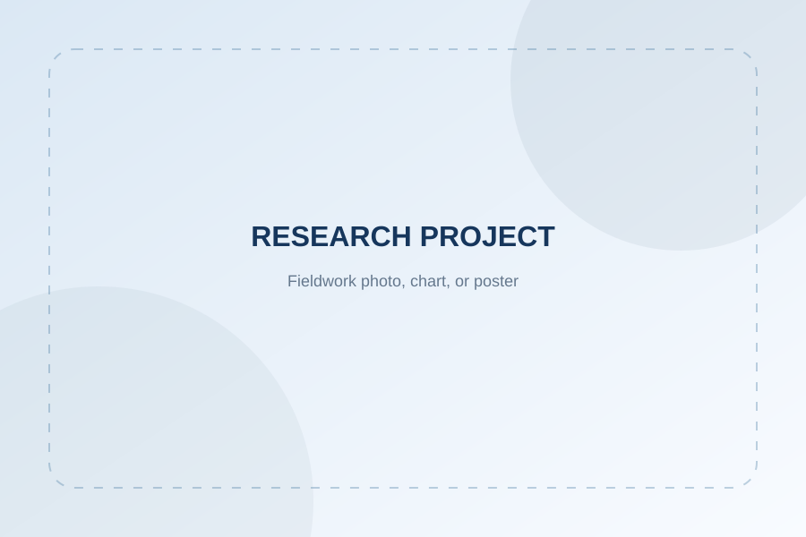

“双碳”目标下临港新片区湿地演化与固碳潜力提升
Wetland Dynamics and Carbon Sequestration Potential in Shanghai Lingang under China’s Carbon Goals
研究主题 / Research Focus：关注临港新片区湿地演化与固碳潜力提升，探索湿地类型变化、生态修复情景与碳效益之间的联系。
技术思路 / Methodological Approach：结合文献梳理、遥感与 GIS 空间分析、生态系统服务评估及情景分析，逐步搭建研究路径。
当前进展 / Current Progress：整理研究区与相关文献数据，核实湿地类型面积及碳储量估算依据。具体结论以核实后的资料和实际分析结果为准。
湿地演化蓝碳评估遥感与 GIS情景分析